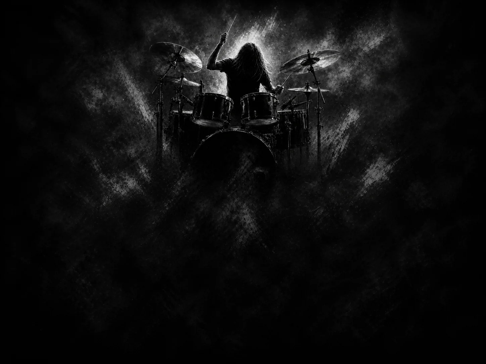

Drums
TAMA Starclassic Performer Series
Maple / Birch Shells
- 10" x 7" Rack Tom
- 12" x 8" Rack Tom
- 14" x 12" Floor Tom
- 16" x 14" Floor Tom
- 22" x 16" Bass Drum

I began playing drums at a young age, and even through long seasons of study, work, and distance from the kit, rhythm never left me. Extreme metal shaped my ears and ambition: Inferno of Behemoth, Frost of Satyricon, and George Kollias of Nile taught me to hear speed not as chaos, but as discipline, precision, control, and atmosphere pushed to the edge.
My first cymbal, an 18-inch Paiste PST 5 Medium Crash gifted by my father, marked the beginning of a path I still carry with me. Today, my goal is to create and release my own black metal album: music built from darkness, aggression, melody, and emotional weight. Songs like Cradle of Filth's Nymphetamine still remind me why this world first pulled me in.
My path is still unfolding, but the purpose remains clear: to create with precision, intensity, and soul.
Open to collaborate if the music is right.
Contact Me
TAMA Starclassic Performer Series
Maple / Birch Shells
Mapex Black Panther Persuader Hammered Brass Snare
Paiste RUDE
Evans Drumheads